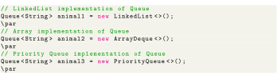

Next: Methods of Queue Up: Java Queue Previous: Working of Queue Data Contents
In Java, we must import java.util.Queue package in order to use Queue.

Here, we have created objects animal1, animal2 and animal3 of classes LinkedList, ArrayDeque and PriorityQueue respectively. These objects can use the functionalities of the Queue interface.